I tidigare kapitel har vi utforskat vad som väcker motivation och hur den formas i mötet mellan mening, autonomi och nyfikenhet. I det här kapitlet fördjupas frågan i en digital kontext, där teknik inte bara är något vi lär oss om, utan också något vi lär oss genom.
Digitalisering har länge beskrivits som en teknisk förändring, men för den som arbetar med lärande är förändringen i grunden mänsklig. Den handlar inte om att lägga till teknik, utan om att frigöra den mänskliga kraften bakom den. När digitala verktyg används för att väcka lust, nyfikenhet och självtillit blir tekniken inte ett mål utan ett språk och ett sätt att göra lärandet mer begripligt, engagerande och tillgängligt för fler.
När människor upplever att de kan bemästra eller ta sig in i något nytt, då väcks också motivationen. Den behöver aktivering för att tändas och är grunden för allt lärande. Den förstärks också av den omedelbara återkoppling och konkreta skapar-känsla som digital teknik möjliggör. Att skapa något från grunden – en text eller bild, en låt, en app, en film, en visuell modell – är inte bara en aktivitet. Det är en förskjutning av identitet. Jag kan! blir inte ett konstaterande, utan en upplevelse i kroppen. Och den som en gång känt den - vill fortsätta.
Som Johan Cedermark, grundare av konceptet Trainstation påpekar, är det just i de ögonblicken, när tid och rum upphör och vi glömmer att vi ens lär, som något viktigt och effektfullt sker. Flow är inte en bonus, utan själva drivmedlet. Läs mer i intervjun med Johan Cedermark i nästa kapitel.
Från teknik till mening
Digitalisering inom fältet lärande handlar därför inte främst om fler verktyg, utan om att använda potentialen i den digitala tekniken för att stödja och förstärka oss människor. Det verkliga skiftet sker när vi designar för syfte snarare än funktion, när teknik används för att synliggöra framsteg, skapa delaktighet och väcka förståelse. När ett digitalt rum gör det möjligt att kliva in i ett skeende, när en kodmiljö visar i realtid vad en förändring betyder, när en simulering låter deltagaren experimentera utan risk – då blir tekniken meningsbärande.
Immersiva eller omslutande digitala miljöer förstärker detta. De låter oss befinna oss mitt i det vi lär, inte bara betrakta det. Vi får röra oss rakt genom kunskapen, snarare än att läsa oss till den. Det kan handla om att förstå fysik genom rörelse, historia genom att delta i en berättelse eller om samarbete genom spel. Men tekniken kräver design med omsorg. För mycket stimuli eller dålig rytm kan stänga ner motivation lika snabbt som den tänds. Det är först när syftet känns tydligt, tempot stämmer och interaktionen känns naturlig som immersivitet blir meningsskapande.
Johan Berntsson, VD på bolaget Ambition (Ambition Empower) beskriver det som att:
“Det mesta som funkar riktigt bra märks inte – verktyget ska inte stå i vägen för uppgiften.”
När ett lärandeverktyg känns självklart – när man knappt märker det – då har tekniken gjort sitt jobb. Läs mer om den sortens osynliga möjliggörare för design i intervjun med Johan Berndtsson i detta kapitel.
Motivationens arkitektur
Inre motivation uppstår ju som vi flera gånger redan konstaterat när vi får aktivera oss, när lärandet känns meningsfullt, när progressionen är synlig och när vi har kontroll över vägen framåt. Digitala verktyg kan stödja allt detta, men bara om de utformas med beteendedesign och kognitionspsykologi i ryggen.
Repetition är en nödvändig del av lärandet brukar vi säga, men i digitala miljöer kan repetition designas utan att kännas som upprepning, det som kallas spaced repetition. Genom korta övningar, realtids-feedback och tydlig feedback kring framsteg, kan lärandet bli en naturlig del av vardagen.
Forskning om beteendeförändring visar att det inte handlar om att frigöra stora mängder tid, utan om att skapa rytm och struktur. En timme i veckan kan räcka långt, om den timmen fylls med relevant innehåll, socialt utbyte, handledning och reflektion.
Motivation kräver också viss friktion. För mycket bekvämlighet leder inte till utveckling, lika lite som för mycket motstånd leder till lärande. Digitalt designade miljöer måste därför balansera enkelhet med engagemang. När det finns en tydlig rytm och en gemensam puls i lärandet skapas också psykologisk trygghet. Vi vågar delta, testa, misslyckas och börja om.
Petter Wanneberg, forskare vid RISE framhåller att detta är just kärnan i all lärandedesign: att skapa miljöer där människor vågar vara nybörjare.
“Det är skillnad mellan lärande och utlärande. Pedagogiken i exempelvis föreläsningar är ju väsensskild från det som sker när vi faktiskt plockar upp ett lärande vi befinner oss mitt i.”
Läs mer om Petters arbete med XR-teknik och lärande i detta kapitel.
Inkludering som konstruktion
Digital teknik kan också vara ett språk som fler kan tala och inkluderas i. När teknik används som ett laborativt verktyg för att skapa och utforska, blir lärandet tillgängligt oavsett bakgrund, språk eller förkunskap. Det handlar inte bara om teknikvana, utan även om självbild. När människor får skapa något eget – en berättelse, en prototyp, en visuell idé – blir de delaktiga på riktigt.
I miljöer där lärandet är kollektivt snarare än individuellt uppstår dessutom något mer, nämligen en gemensam motivation. Att samarbeta, utbyta idéer och utvecklas tillsammans blir inte bara effektivare, utan också tryggare. Den psykologiska tryggheten gör att man vågar vara nybörjare. Och att våga vara nybörjare är i sig ett tecken på lärande.
Binette Seck, grundare av Changers Tech, uttrycker det som att:
“Kod är ett språk som alla ska ha rätt att tala.”
När fler får verktygen att förstå och forma sin digitala omgivning, skapas också delaktighet i samhället. Inkludering handlar därför inte om att anpassa, utan om att designa rätt från början. Med tillgänglighet, representation och gemenskap som del av själva systemlogiken. Även Binette kan du läsa mer om lite längre bak här i kapitlet.
När teknik blir användbar
Teknikens roll i lärande är alltså dubbel: den ska vara kraftfull när den behövs, men kraften ska helst inte behöva märkas utan bara göra sitt och underlätta för dig som vill lära med hjälp av den. God användbarhet innebär att fokus ligger på uppgiften, inte på gränssnittet. Verktygen ska stötta lärandet, inte stjäla energi. Ett väldesignat system känns inte avancerat, bara självklart.
Användbarhet handlar också om empati. Om att förstå människors tid, stressnivåer och behov av återkoppling. Många digitala system för lärande är fortfarande byggda för administration snarare än lärande. De gör det lätt att rapportera, men svårt att reflektera. När tekniken istället används för att minska onödig friktion (men inte den för lärande nödvändiga), fokusera och skapa gemenskap, blir den en katalysator för lärande snarare än ett hinder.
I takt med att AI och nya gränssnitt blir en naturlig del av lärandet får den mänskliga faktorn ännu större betydelse. AI kan kurera innehåll, ge personlig feedback och simulera scenarier, men det mänskliga mötet behövs för att skapa mening. Lärandet får aldrig bli en transaktion. Det måste förbli en relation.
Det meningsfulla lärandets logik
Vi har länge också hanterat och betraktat lärande med allra mest fokus på slutresultatet, kunskapen eller beteendeförändringen. Detta behövs naturligt vis i en mängd olika sammanhang. Men vi har inte gett lika mycket kärlek eller uppmärksamhet åt, eller designat för - själva processen lärande. Utan den, kan vi inte skapa de förutsättningar som förmågan att lära kräver, utan den får vi inte in drivkrafterna som gör att vi lär. Joel Rangsjö, verksamhetsutvecklare inom AI på utbildningsförvaltningen i Jönköping, återkommer till samma sak när han pratar om lärande i en AI-tid, att det inte är resultaten som är poängen, utan vägen dit. Läs mer i det här kapitlet om Joels övertygelse om att AI kan stödja vårt lärande, genom att göra processen tydligare, mer tillgänglig och lättare att hålla i, även när motivationen svajar. Play, Code, Learn handlar därför om att väva samman olika dimensioner: motivation, immersivitet och inkludering. Digital teknik är inte ett skikt ovanpå dessa, utan ett sätt att förstärka dem.
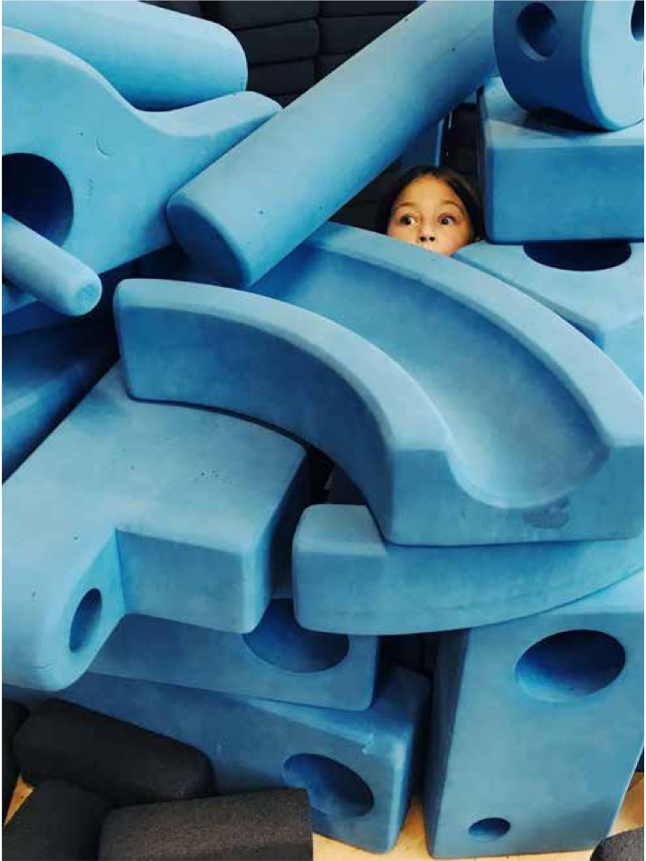
Motivationen väcks när vi känner att det vi gör har betydelse. Att “bada i lärande“ (immersivt) gör upplevelsen levande och djup. Inkluderingen säkerställer att fler kan delta, bidra och utvecklas på egna villkor. Och användbarheten – den goda designen – gör allt detta möjligt i praktiken.
När tekniken inte längre upplevs som ett krav, utan som ett verktyg för att uttrycka sig, samarbeta och skapa mening - då sker lärande på riktigt. Teknik kan här användas för att väcka lust, skapa motivation och göra lärandet till en del av livet.
Play, Code, Learn är berättelserna om just det – om människor som med hjälp av digital teknik och mänsklig kreativitet gör lärandet mer levande, mer rättvist och mer tillgängligt. Och som visar att den största innovationen i det digitala lärandet fortfarande är djupt mänsklig.
Intervju med Petter Wannerberg
Att bygga världar för lärande
Petter Wannerberg är forskare och VR-utvecklare vid RISE, där han utforskar hur immersiv teknik kan användas för att skapa lärupplevelser som engagerar både kropp och sinne. Med bakgrund inom interaktionsdesign och digitala medier arbetar Petter i skärningspunkten mellan teknik, pedagogik och kreativitet. Han drivs av att göra lärande mer tillgängligt, upplevelsebaserat och meningsfullt – och av att visa hur ny teknik kan stärka snarare än ersätta det mänskliga mötet.
När Petter Wannerberg talar om lärande gör han det med samma nyfikenhet som en spelutvecklare som just öppnat en ny värld. Han rör sig mellan kod, forskning och filosofi, mellan verktyg, miljöer och mänsklig förståelse – och han försöker ständigt hitta vägar där teknik inte står i vägen för lärandet, utan istället förstärker det.
Hans väg in i forskningen började i spelvärlden. Fascinationen för hur teknik och design kunde skapa känslor och mening fanns där tidigt. Som för många började det med att spela tv- och dataspel.
“Det var så jag kom i kontakt med virtuella världar. Intresset väcktes, och först ville jag ju bli speldesigner. Det var det högsta målet man kunde nå.”
När VR-tekniken gjorde sitt intåg såg han möjligheten att använda samma motorer och interaktiva logik för något större. Det som tidigare varit en plats för underhållning kunde också bli en plats för lärande. Han såg hur VR-tekniken bygger på samma teknik som spelplattformarna använder, och att det var något han ville lära sig mer om.
Från spel till skola
Idag arbetar Petter som forskare och utvecklare vid RISE, där han har lett projekt som VäXR och VR-skola – som båda är försök att förstå hur immersiva miljöer kan användas för att göra lärande mer meningsfullt.
“Det är skillnad mellan lärande och utlärande. Pedagogiken i exempelvis föreläsningar är ju väsensskild från det som sker när vi faktiskt plockar upp ett lärande vi befinner oss mitt i.”
I VR-miljöer undersöker han hur elever kan uppleva och interagera med abstrakta begrepp förutom att läsa om dem. Han bygger övningar där man kan pussla ihop 2D-ytor till 3D-former. Du får som användare vika ihop dem, testa och se om det stämmer. Och om det blir fel får du göra om. Du får leka, lära, misslyckas och testa igen. De här ögonblicken, där nyfikenhet leder till förståelse, är vad som intresserar Petter mest.
“Det är där aha-upplevelserna kommer. När du försöker, misslyckas och förstår varför det blev så. Det är så mycket lärande i det där, i själva nyfikenheten.”
Han jämför det med Tom Tits Experiment i Södertälje, där lärandet sker i rörelse och utforskande snarare än genom instruktion. Det handlar om känslan, att få interagera, utforska, visa varandra. Det finns mycket energi i det.
När hjärnan flyttar in i världen
Petter beskriver hur VR skapar en annan sorts förståelse genom att engagera fler delar av hjärnan.
“Hjärnan flippar över och börjar arbeta på ett helt annat sätt när vi byter miljö”, förklarar han. ”Vi står ju kvar i samma rum när vi tar på oss headsetet, men hjärnan blir lurad av det visuella och ljudet. Då får vi grepp om den nya miljön med de
spatiala delarna av hjärnan – de som hjälper oss att navigera och minnas.”
Han berättar om övningar där elever får utforska begreppet volym i VR. De kan få stå bredvid en kubikcentimeter, en kubikmeter och till slut en kubik-kilometer. De ser skillnaden, de känner den nästan. Det här går inte att göra i verkligheten. Och när man står där, bredvid en kubikkilometer, så inser man plötsligt proportionerna på ett helt annat sätt. Det handlar om att skapa minnesbilder som är rumsliga, kroppsliga och känslomässiga.
“Lärande har inte bara med att komma ihåg att göra. Det handlar om att koppla ihop begrepp med upplevelser. Och det kan VR göra möjligt.”
Teknik som öppnar, inte stänger
För Petter är tekniken en möjliggörare för allt detta. Han ser hur immersiva miljöer kan göra lärandet mer inkluderande.
“När du kommer in i en simulerad miljö, där allting inte känns lika allvarligt, så finns det ett blomstrande där. Vi har sett att elever plötsligt börjar prata och kommunicera och bli taggade kring lärande, på ett sätt som de inte var när de var utanför de virtuella miljöerna.”
VR-skola är också ett sätt att tänka nytt kring motivation. Petter ser hur vissa elever, särskilt de som haft svårt att hitta motivation i traditionell undervisning, plötsligt visar nyfikenhet och initiativ. När det känns som en värld du får vara i, snarare än en uppgift du måste göra, så händer något.
Lärandet kommer till liv. Samtidigt är han tydlig med att tekniken kräver eftertanke.
“Vi måste bygga ekosystem runt VR, inte tro att man bara kan säga ‘kör den här appen’ så har du lärt dig. Det handlar om att kombinera miljöer, bygga rytm och ge utrymme för reflektion.”
För Petter är framtiden inte bara teknisk, utan pedagogisk och etisk. Man behöver förstå var gränserna går.
“Hur länge ska man vara i VR? Vad händer med kroppen, med ögonen, med upplevelsen av verklighet? Det är frågor vi utforskar just nu.”
Playguide – designa för upplevelsebaserat lärande
När Petter Wannerberg beskriver framtidens lärande låter det som att han skissar ett nytt landskap, snarare än ett system. VR-tekniken blir ett verktyg för att bygga världar av lärande snarare än lektioner. Det finns några mönster som vi kan se återkommer i hans forskning och praktik:
Att låta människor vara nedsänkta i - och interagera med - kunskap, inte bara läsa om den, skapar starkare förståelse.
Att ge utrymme för utforskande, lek och misslyckande väcker motivation och mod.
Att bygga digitala miljöer där man vågar vara nybörjare skapar både trygghet och lärande.
Petter ser det här som lärandets nästa steg. Inte bort från klassrummet, utan mot fler sätt att erfara världen. Han vill skapa en vision, ett koncept för hur det kan se ut. Det är en process, men det är precis där lärandet finns – i själva utforskandet.
Intervju med Joel Rangsjö
När vägen blir viktigare än svaret
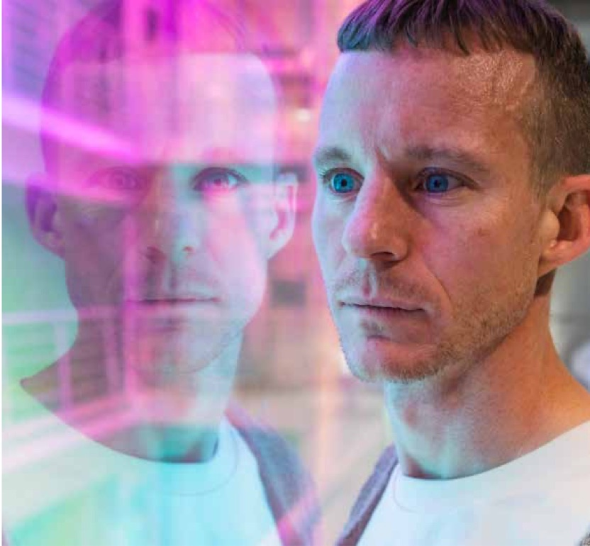
Joel Rangsjö är språklärare i svenska och spanska, och arbetar numera som verksamhetsutvecklare inom AI på utbildningsförvaltningen i Jönköping. Under många år stod han mitt i klassrummet, där vissa elever älskar att formulera sig och andra undviker text till varje pris, där bedömning ibland blir viktigare än förståelse och med motivation som kan skifta från minut till minut. När generativ AI gjorde entré blev han en av dem som inte fastnade i frågan om verktyget ska förbjudas eller inte. Istället började han tidigt undersöka vad tekniken kan göra med själva lärprocessen för oss alla, när svaren blir enkla att producera men förståelse fortfarande måste tränas.
Joel kallar sig ibland, med glimten i ögat, en AI-afficionado, alltså en person som är entusiast, kännare eller nörd och ofta ordentligt kunnig inom ett visst område.
”Jag har, som så många av oss, en fascination för den här tekniken. Den är både skrämmande och spännande. Vi behöver prata möjligheter på utandning och utmaningar på inandning.”
Det är en talande kombination. Han pratar om AI som något som går att lägga som ett raster över politik, ekonomi och filosofi, men återkommer ständigt till en mer vardaglig nivå. Vad händer med drivkraft, fokus och uthållighet när tekniken kan bära delar av såväl arbete som kunskapsresultat?
Att bli bekväm i det obekväma
När Joel beskriver sin egen relation till lärande börjar han heller inte i metoder, utan i reflektioner kring självbild. Han säger att han hade det lite för lätt i skolan, att han därför kunde gå och riva av proven och få skolarbetet att fungera utan att riktigt behöva anstränga sig. Det skapade i efterhand ingen känsla av stolthet, snarare en insikt om att lärande inte handlar om att snabbt “klara av” uppgifter, utan om att våga stanna kvar och utforska även när det är svårt. Två sportreferenser har följt honom länge, den ena fångad i en formulering som han ofta bär med sig, “utveckling handlar om att bli bekväm i det obekväma”. Den andra handlar om ultra löpning, en envis träningsform där allt reduceras till att kunna ta nästa steg. Där processen inte är en transportsträcka, utan själva jobbet.
Det är också den logiken som gör att han inte är så intresserad av AI som genväg, utan som tränings miljö. Vad kan tekniken göra för att fler ska kunna ta just nästa steg i sitt lärande, och nästa igen? Utan att fastna i skam, motstånd eller överväldigande.
Det började som fusk
Joels första möte med GPT-liknande AI-modeller var inte i någon framtidsvisionerande presentation på en konferens. Nej, han fick syn på det här tekniksprånget i en text inlämnad av en elev. Eleven som vanligtvis inte skrev så utförligt, lämnade nu in en text som var - som Joel säger - “fullsmetad med adjektiv”. Det såg skevt ut vilket Joel uppmärksammade, och eleven visade också sen snabbt hur hen hade gjort.
“Jag insåg där och då, här finns det någonting vi inte har sett förut. Jag är språklärare som tror på skola och på lärande. Och som idag tror på AI i förhållande till det, att det åtminstone är värt att utforska.”
Många hade kunnat stanna där, i irritation eller kontrollbehov. Joel gick vidare, inte för att han var naiv, utan för att han insåg att den här tekniken inte skulle försvinna. Den skulle dessutom kunna bära med sig helt nya möjligheter. Frågan blev i stället, vad gör vi nu som faktiskt är meningsfullt?
Ett annat ögonblick då han såg potentialen i tekniken, var under en lektion i referatskrivning inför nationella prov. En lektion som han skämtsamt beskriver som “så tråkig att man för allt i världen inte vill att rektorn ska komma in just då”. En elev som kämpade med sin vardag berättade efteråt om bråk hemma, utmaningar med studierna och ett prov att leverera dagen efter.
Joel visade då eleven ChatGPT som fortfarande inte fanns i var människas hand vid den tidpunkten. Men han introducerade förstås inte AI som en maskin för att generera facit. Istället instruerade han botten att agera som en lärare som leder dig mot lärande, inte bara leverera färdiga svar. Efteråt sa eleven, “fasen Joel, det här förändrar ju allting, nu har jag ju alltid någon att fråga!”.
Det är en insikt som säger mycket mer än att tekniken är smart. Den säger något om hur ensamt det kan vara att lära, om trösklar, om vad som händer när det plötsligt finns en samtalspartner som inte dömer, som orkar svara igen, som kan förklara på nytt. Det är också här Joels fokus blir tydligt. AI kan absolut användas för att komma runt ett system. Men den kan också användas för att komma in i en process som annars aldrig riktigt får förutsättningen att starta, för såväl barn och unga när de är elever, som för oss vuxna i vårt livslånga lärande i arbetet och utanför.
Kristina Björn, är utbildningsstrateg och senior projektledare på RISE med bakgrund som lärare, och arbetar för närvarande även i ett projekt där man formulerar idén om hur ett nationellt Excellenskluster för området AI och Livslångt Lärande skulle kunna utvecklas. Hon funderar just nu mycket på hur tillgången till generativ AI utmanar och påverkar förutsättningarna för lärprocessen och för undervisning i skolan och på annat håll.
”När en AI-agent kliver in och coachar och fattar beslut om vägval och progression i en lärprocess, förändrar det förutsättningarna för undervisning både på individ- och gruppnivå. Vi vet t.ex. att AI:n utformar sin dialog om kunskapsinnehållet på språklig sannolikhet, med den som ska lära sig, vare sig det är en elev eller en vuxen som lär i sitt jobb. Men de beslut AI:n fattar om vägval för lärandet under dialogens utveckling, är inte transparenta. Detta utmanar lärares och kursledares roll och undervisningen behöver designas för individ och grupp på ett sätt som vi inte upplevt tidigare.”
Frågan som styr
Joel Rangsjö säger att han förstår att en ny teknik av den här magnituden och med en sådan stor påverkan, leder till en diskussion om fusk. Det har en relevans, rättssäker bedömning i skolan är en realitet. Samtidigt beskriver han att det är något befriande i att acceptera utvecklingen som också ger oss möjlighet att ta tillfället i akt att fråga oss, “hur gör vi det här på ett nytt sätt nu då?”
”För om det inte finns någon textbaserad uppgift på gymnasienivå som en chattbott inte kan lösa, då måste ju kunskap få betyda något bortom betygen. Då måste kunskap få betyda något på riktigt”.
Det gör, tänker Joel, att vi behöver vara i våra ’varför’.
“Vi skriver inte en debattartikel för att träna inledning, tes, argument 1, argument 2, motargument, argument 3, avslutning. Vi skriver den för att det är ett sätt att ta del av det demokratiska samtalet. Vi behöver vara i vår mylla, gräva, vara i våra varför.”
Den hållningen går att känna igen långt utanför utbildningsvärlden. När AI dyker upp i projektarbete, kommunikation, analys eller kodning, då blir den första reaktionen ofta att vi inte kan lita på resultatet och samtidigt känner vi paradoxalt nog en viss rädsla för vad AI kan komma att ersätta. Ganska snart kommer sen även tanken, så vad är det vi egentligen vill att människor ska kunna göra för att utvecklas och bli bra på, om leveransen inte längre säger allt om vår kompetens?
För vad blir det värt att producera en fantastisk text, om det är AI som skriver den åt dig? Vad är då kvar som ett gott dagsverke att vara stolt över? Kan det kanske vara så, att det är ett annat värde och lärande vi idag behöver finna och fokusera på? I relation till vårt projekt, kommer vi här också in på inre motivation och nyfikenhet. Våra varför hör nära ihop med det som driver oss, vår inre motivation som blir avgörande för att vi ska orka, vilja och förmå lära längs hela livet.
Johan Alvehus, professor i tjänstevetenskap vid Lunds universitet, har också intresserat sig för hur AI-tekniken kan påverka vår syn på lärande och hur vi faktiskt lär. Han beskriver hur AI har potential att förskjuta fokus från resultat till process. När ett tekniskt verktyg gör slutprodukten lättare, snyggare, bättre eller snabbare, blir det än viktigare att träna omdömet - och förmågan att både designa lärande och bedöma det. Vi ger tyngd åt det vi mäter, så hur förskjuter vi den tyngden här? Fler och fler inom akademin och skolan funderar nu över och försöker utveckla just detta.
AI som möjliggörare
Joel Rangsjö säger att AI förändrar mycket och samtidigt ingenting. Vi måste fortfarande läsa, skriva, tänka, räkna och öva oss på att utveckla våra egna tankar. Men tekniken gör kunskapen mer tillgänglig, och så även möjligheten att uttrycka sig. Rätt använt tillgängliggör AI kunskap och uttryck, och det kan öppna dörrar för fler. Men man behöver vara noga med när, och i vilka delar av lärprocessen, som AI ska in.
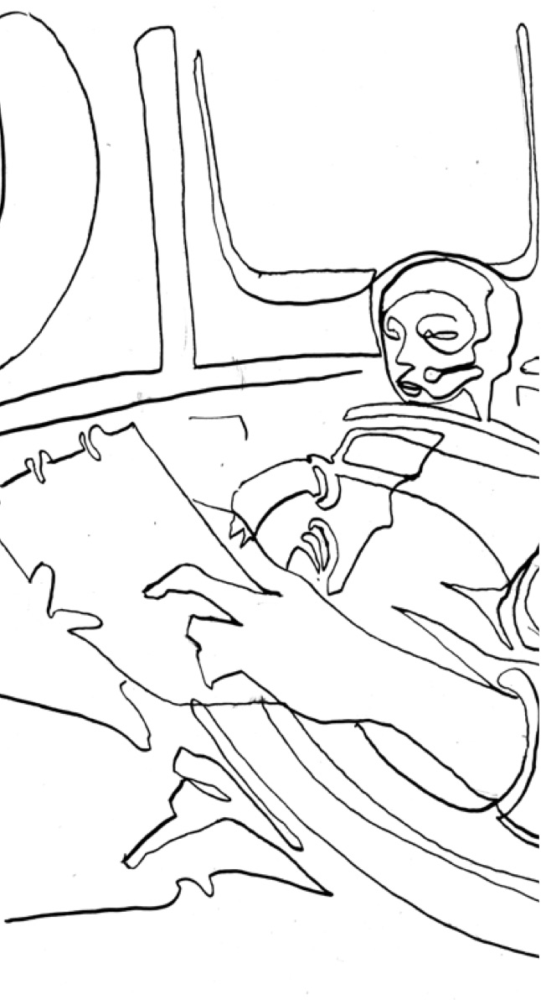
“Vi behöver designa AI:ns beteende - och ta pedagogiskt ansvar för AI-användandet. Att slänga in en chattbott i exempelvis ett klassrum och förvänta sig att det ska ske ett lärande, är som att slänga in en random, normalbegåvad person från gatan. Det kan bli bra, men det kan bli katastrof. Vi behöver ta ansvar och designa för friktion.”
Joel betonar att AI är en automatiserande teknologi som kan ta bort det motstånd som kan krävas för lärande. Vi behöver, när AI ska vara en del av lärprocessen, designa det motståndet på andra sätt. Han pratar om hur man med hjälp av AI - trots avsaknad av exempelvis färdigheter i ett visst hantverk - ändå kan genomföra en idé inom det. Många är de som inte kan skriva kod, som idag ändå kan koda saker.
Det här är provocerande för vissa och befriande för andra. I Joels ögon är det mest ett faktum, och det flyttar ansvaret till nästa nivå. Om man lättare kan få fram en första version av något, då blir det ännu viktigare att människor kan granska, förbättra, motivera, välja, göra avvägningar, och förstå vad man faktiskt vill åstadkomma.
Johan Alvehus resonemang om process blir relevant även här. När output blir lättare att producera måste vi bli bättre på att se vad som hänt på vägen fram till resultaten, vilka steg som togs, vilka val som gjordes och vad som egentligen lärdes. Eller vad som bara kopierades.
Även Kristina Björn menar att vi troligtvis står inför ett långt mycket större skifte. Ett som vi ännu inte kan föreställa oss resultatet av, lika lite som en bonde kunde föreställa sig hur livet som industriarbetare i stan skulle bli när han befann sig i början av den industriella revolutionen.
“Vi lämnar nu en tidsålder där förmågan att använda och uttrycka kunskaper i text varit en unik mänsklig förmåga, och går emot en tid där maskiner som vi själva har utvecklat är långt mycket bättre än oss på detta. Vad innebär det att utveckla, värdera och mäta kunskapsutveckling då?”
Lek som tar läsning på allvar
När Joel Rangsjö berättar om ännu ett konkret exempel på hur man kan använda AI för just lärande, så handlar det inte oväntat - om att leka sig fram till förståelse. En gymnasieklass skulle ta sig an litteraturklassikern Doktor Glas av Hjalmar Söderberg och här valde Joel att låta det bli delvis med AI som designstöd.
Elevernas karaktärsanalyser från boken blev bottar, man skapade bilder, filmer och scener med hjälp av AI och man provade samtal där ChatGPT agerade åklagare.
“Grundtanken var ju att fördjupa läsningen, att skapa fler ingångar till texten och hålla i nyfikenheten hela vägen. Syftet var hela tiden att få läsningen att hända, och att lära oss vad som funkade och inte.”
Joel beskriver det som ett utforskande, men också som ett sätt att få fler att faktiskt ta sig igenom en text som kräver ganska mycket av sin läsare. Det avgörande är vad han gjorde efteråt. Han lät inte AI bli hela undervisningen, utan landade i ett boksamtal, och en uppgift i form av ett klassiskt PM. Det han menar är att vägen dit kan förändras utan att målet försvinner.
Att klona återkoppling, inte ersätta människor
De mest intressanta exemplen Joel ger är just de vardagliga. I stället för att elever bara svarar på läsloggsfrågor och går vidare, byggde han en chatbott där frågorna var hans, men där botten var instruerad att agera som samtalspartner och ställa följdfrågor. Där blev han som lärare klonad, kunde finnas till för fler. Tekniken kan multiplicera vissa delar av lärar- eller kursledarstöd, återkoppling, förtydliganden eller struktur. Det här är en fråga relevant för varenda organisation som sitter och tittar på kompetensfrågor, lärinsatser för alla medarbetare eller utbildning.
Och det är också här den förskjutning som även professor Johan Alvehus beskriver blir konkret. När vi inte längre kan lita endast på output eller resultat som de enda bevisen på kunnande, behöver vi skapa miljöer där själva lärandet blir synligt. Vi behöver designa förutsättningar för följdfrågor, resonemang, erfarenhetsutbyten och gemensamma insikter. Vi behöver göra plats för allt det som är tecken på tänkande och som visar om någon faktiskt tränar och lär, och inte bara producerar.
Motståndet som också är en signal
Joel pratar också om motstånd, både hos elever och i sin egen omgivning. Han berättar om en klass som hade ett starkt motstånd mot AI. Där fanns mycket rädsla och en upplevelse av att tekniken hotar både identitet och framtid. Han säger att man måste vara lyhörd även för såna känslor.
Här beskriver han sin egen resa med hjälp av en trendkurva. Mycket nytt kommer ofta först med en uppblåst förväntan om revolution, sedan en trötthet, och därefter en mer nykter syn på nyttan med det nya. Steg för steg hittar man en väg där tekniken skapar värde. AI-teknik kan successivt hjälpa till med sådant som annars tar tid och kraft, och som avgör om någon över huvud taget kommer i gång med sitt lärande.
Joel Rangsjö återkommer till att tekniken kan sänka trösklar, göra kunskap mer tillgänglig och ge fler en chans att komma i gång, men bara om vi samtidigt håller fast vid det som faktiskt utvecklar oss, som skapar den meningsfulla friktionen, återkopplingen, de små stegen och de frågor som får tanken att ta form.
Det sammanfaller med Johan Alvehus resonemang om att när resultat blir enklare att producera, blir också processen ännu mer värdefull. AI kan bli en genväg som gör arbetet åt oss, men den kan också bli ett stöd som hjälper oss att stanna kvar i lärandet och fördjupa det.
I slutänden handlar det om inkludering, att fler får liknande möjligheter att dra nytta av AI för lärande. Som Kristina Björn formulerar det:
”Många menar nu att de av oss som blir bäst på att samarbeta med AI också är de som kommer att komma ut som vinnare. Så när det oundvikliga systemskiftet är gjort. När vår nästa stora samhällsomställning är ett faktum och vi tillsammans har utforskat och förstått hur vi bäst samverkar med AI för lärande. Då vore det fantastiskt fint om vi också hade gett alla, och även våra barn och unga, möjlig het att ansluta sig till det vinnande laget.”
Playguide – gör AI till stöd för process, inte genväg till resultat
Börja i varför, vad är det som ska utvecklas här, inte bara levereras.
Bestäm var i processen AI får vara med, och vad som ska göras utan teknikstöd.
Använd AI för följdfrågor, struktur och förtydliganden, alltså för att hålla tänkandet i rörelse.
Gör arbetssättet synligt, låt människor beskriva hur de använde AI och vad de själva behövde tänka.
Skapa en rytm av små steg, utkast, återkoppling och revidering. Det är där utveckling sker.
Ta motstånd på allvar, det signalerar ofta identitet, oro och behov av trygghet. Inte ovilja.
Se till likvärdigheten. AI-kunnande och tillgång till bra arbetssätt har redan hunnit bli en jämlikhetsfråga.
intervju med Johan Berndtsson
Osynlig teknik stödjer lärande
Johan Berndtsson är medgrundare av och vd för Ambition Group och den digitala tjänsten Empower, som hjälper organisationer att utveckla sin kultur, sitt ledarskap och sitt lärande. Med en bakgrund inom design, strategi och organisationsutveckling har Johan länge utforskat hur teknik och pedagogik kan förenas för att skapa verklig utveckling på arbetsplatser. Han drivs av övertygelsen att lärande är en pågående process – och att framtidens organisationer byggs av människor som ständigt växer, tillsammans.
Efter Petter Wannerbergs resa in i de immersiva världarna, stannar vi kvar i det digitala men kliver närmare det vardagliga hantverket. För om VR och simulerade miljöer kan skapa kraftfulla lärupplevelser, så krävs något lika avgörande i bakgrunden: verktyg som inte stör. Här tar Johan Berndtsson vid. Hans tes är enkel och helt rimlig, men efterlevs inte alltid för det. Teknik betyder ingenting om den inte går att använda på ett bra sätt.
Vår vardag är redan full. Att ”lära sen” vinner nästan aldrig mot kalendern, barnens träningar och nästa deadline på jobbet. Johans arbete adresserar just det, inte med mer innehåll utan med bättre design. En beteendedesign med rytm och verktyg som hjälper oss tillbaka in i lärandet, vecka efter vecka, utan att stjälpa livspussel och vardag.
Den osynliga verktygslådan
”När jag gör ett bra arbete är det ingen som märker det”, berättade en av Johans kollegor för honom. Det är en sammanfattning av bra UX. I vardagsverktyg ska effekten uppstå när gränssnittet försvinner. Tidrapporteringen sker lätt, eller kanske slopas helt när det tekniska flödet har löst det åt dig. Fokus landar på uppgiften, inte på verktyget.
I lärande blir det här ännu tydligare. Höga stressnivåer som kommer av högljudda, onödigt komplicerade eller feldesignade system äter motivation. Därför designar Johan och teamet för att lärande ska kännas självklart, med en liten tröskel in, tydlig riktning och rätt stöd i rätt ögonblick. Och ingen flimrande kaskad av notiser och aviseringar.
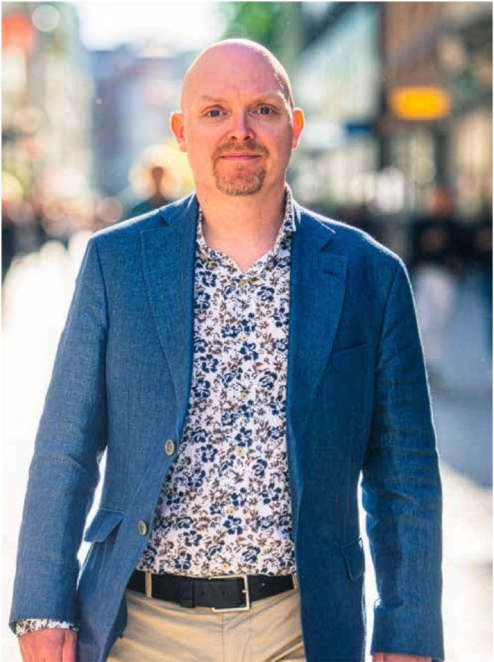
”Vi vet alla hur man swipar bort notiser. Tricket är att hjälpa, inte jaga.”
En timme i veckan - på riktigt
I uppstarten av sin verksamhet intervjuade Johan och hans kollegor femtio designledare och insåg något viktigt som gjorde att de behövde omvärdera sina tankar. Deras tanke om att avsätta två timmar i veckan löpande och dedikerat för lärande på jobbet, visade sig vara en illusion.
”En person på Spotify sa det rakt ut: två timmar är reserverade för att jag ska hinna med mina viktigaste saker, och det här kommer inte vara en av dem.”
Alltså följde man användarna och började tänka ut vilken design som kunde fungera. Resultatet blev en timme i veckan, designad för maximal effekt.
Den timmen bär tre lager:
Kurerat innehåll med artiklar, videos och uppgifter så att varje minut är värd tiden
Gemensam puls genom live-sessioner och gruppcoaching med erfarna spårledare som formar praktik, inte tillfällig inspiration
Beteendedesign med små triggers, kalender-ankare och stöd som gör det lätt att göra rätt utan att bli påflugen
Livepassen spelas aldrig in. Inte för att exkludera utan för att skapa ett tryggt rum.
”Det ska vara ett här och nu. Man vågar dela det som inte är färdigt när det inte hamnar i ett arkiv.”
Internet är trasigt
Johans kritik är dräpande och konstruktiv på samma gång. Sökordsoptimering har knuffat ned kvalitet och gjort det svårt att hitta information online som verkligen håller den kvalitet man letar efter vid bland annat lärande. Lösningen är inte ännu fler kurser, utan en aktiv kurering av det bästa som redan finns därute, guidat av personer med djup domänkunskap. När tiden är knapp måste någon garantera att just den här artikeln, den här föreläsningen och den här övningen för lärandet framåt.
”Vi behöver inte mer material. Vi behöver bättre vägvisare.”
Intentionell friktion
Johan pratar varmt om enkelhet och försvarar samtidigt vissa trösklar när vi ska lära. Det låter motsägelsefullt, men det är precis tvärtom. Viss friktion fördjupar engagemanget. Att dyka upp på ett live-samtal, att vara med när det händer, att inte bara luta sig mot en inspelning senare - ger en annan investering och därmed effekt på lärandet. Den lilla ansträngningen skapar närvaro, öppnar upp för samtal och gör misslyckanden och omtag till en del av processen, inte något man gör ensam i skymundan.
Från kurs till kompetensförsäkring
Johan beskriver skiftet till ett lärande bortom tvådagarskurser. Det handlar om att bygga ett sammanhang som håller över tid, en pulserande lärandemiljö där man kan stiga av och på, byta spår när behoven skiftar, och där ett nätverk av kollegor i liknande roller delar det som faktiskt fungerar.
”Efter de första kanske mer inlärande åren i arbetslivet, är det sen ofta det goda samtalet som driver utvecklingen”, säger han. “Livesessionernas brytningar mellan erfarenheter, metoder och kultur blir motorn.”
Designprocessen, ärligt genomförd
På ytan är deras process enkel: en idé, en app och lansering. I verkligheten började allt med en inloggad WordPress-sida, manuella länkar och hembyggda kalenderlösningar. Tekniken kom sedan, när mönstren var bekräftade. Tidszoner, coachers tillgänglighet, puls och rytm testades i liten skala, innan det byggdes för att hålla skalbart. Det är lärandedesign när den fungerar som bäst, börja i liten iteration, skala när det fungerar.
Sedan tjänsten lanserades har den fortsatt att utvecklas. Appen har förfinats, men det mest avgörande steget har varit att systematiskt stötta chefer och teamledare i att faktiskt leda lärandet. I början sålde man mest enskilda medlemskap, nu säljer de nästan enbart till hela team. När chefen både skapar förutsättningar och följer upp lärandet blir det en kraftfull struktur även för dem som inte är självmotiverade. För att ytterligare stärka gemenskapen har Ambition infört en årlig konferens – ett slags examensfest innan sommarlovet – för att fira lärandet tillsammans och bygga community-känslan över tid.
Motivationens arkitektur
Johans modell är praktisk. Motivation uppstår när tre saker samspelar:
Mening – varför det här spelar roll för mig och för verksamheten
Möjlighet – låg tröskel, tydlig väg, en timme som faktiskt får plats
Trigger – en vänlig puff i rätt stund, kalendern, kollegiet, coachen
Det här är ingen ny formel, men den gör skillnad först när hela tjänsten – innehåll, UX, kommunikation och gemenskap – konsekvent hänger ihop.
Från utbildning till bildning
Att lära handlar inte om att beta av moment eller moduler, utan om att utvecklas till någon som bidrar i sitt sammanhang, i rummet, i rollen och i yrket, över tid. Petter visade hur immersiva miljöer kan göra lärandet kroppsligt och upplevelsebaserat. Johan påminner om det som måste finnas i grunden: att verktygen för lärande fungerar sömlöst och stöttar utan att märkas. När rytmen, den sociala pulsen, urvalet av innehåll och den medvetna friktionen samspelar uppstår den balans som gör lärande hållbart.
Tillsammans visar de att Play, Code, Learn inte är tre skilda delar, utan tre steg i samma rörelse – från upplevelse, till design, till vana.
Playguide - så bygger du osynlig lärandedesign i vardagen
Säkra pulsen. Förankra en timme i veckan i kalendern med samma dag och tid, kort förberedelse.
Kurera hårt. Max två till tre uppgifter per vecka, hellre en briljant grej än fem okej.
Prioritera samtalet. Livesessioner hellre än inspelningar, skapa safe space i nuet.
Använd vänliga triggers. Kalenderinbjudan, korta mail på förhand, en checklista, inget spammande med notiser.
Designa lätt till djupt. Låg tröskel in (fem till tio minuter), följt av en fördjupande övning som kräver reflektion eller samarbete.
Kurera, inte producera. Laga vårt trasiga internet med guider som hjälper deltagaren: ”Se den här videon, läs just det här avsnittet”.
Bygg en gemensam meningsfullhet. Knyt varje spår till reella mål i verksamheten, vad ska bli annorlunda i arbetet de kommande 90 dagarna.
Tillåt avsiktlig friktion. Gör vissa moment live bara för att premiera närvaro och ansvar.
Mät lärande, inte klick. Följ upp beteendeförändring och delade praktikexempel, inte bara genomförandegrad.
Iterera öppet. Testa i liten skala, skala upp först när mönstret håller.
Digitalisering för lärande handlar inte om fler funktioner, utan om känsla och precision. Johan Berndtsson och hans team visar hur det är de små detaljerna som gör skillnaden. Då blir en timme för lärande verkligen värd sin tid.
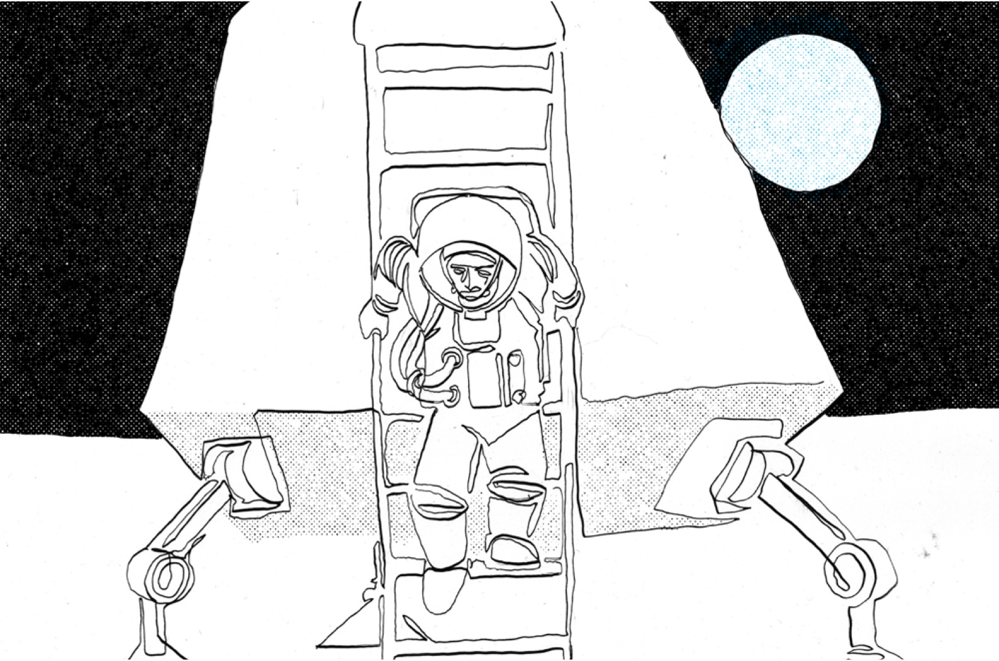
Intervju med Binette Seck
Binette Seck - brobyggaren som vill göra framtiden till allas hemmaplan
Binette Seck är social entreprenör och teknikvisionär med rötterna både i Dakar och Tensta. Hon har satt en ny standard för hur teknologi och samhällsförändring kan gå hand i hand. Hon är medgrundare till ChangersTech, som ger unga vuxna från resurssvaga områden möjlighet till teknisk utbildning och karriärvägar. Med sin bakgrund har hon i den svenska tech-världen blivit en ledande röst för inkludering och mångfald – och har belönats med flera utmärkelser, bland annat “Årets IT-kvinna” 2021.
Binette Seck börjar nästan alltid med att berätta om sitt namn. Det är nämligen påhittat av hennes far, sammansatt av ord på wolof (det mest talade språket i Senegal) och ord på franska, som tillsammans betyder ungefär “pappas flicka som får andra att växa”. Först som vuxen insåg hon hur väl det namnet speglade hennes drivkraft: att se potential där andra bara ser hinder och att ge den potentialen näring.
“Mitt namn stämmer väl med precis det jag vill göra.”
Hon växte upp i Tensta, ett av Stockholms socioekonomiskt utsatta ytterstadsområden och hon har även rötter i Senegal, men såg tidigt bortom såväl geografiska som sociala gränser. I barndomen irriterade hon sina lärare genom att ständigt fråga varför och genom att komma dragande med egna lösningar när uppgiften redan “var klar”. Det mönstret följde med upp i åren.
”När majoriteten gick åt höger var jag alltid benägen att gå åt vänster – inte för att vara tvär, utan för att det måste finnas fler sätt.”
Den nyfikna reflexen fick henne senare att börja släktforska, för att förstå varför hon alltid gått sin egen väg. Forskandet hjälpte henne att landa i en självklarhet – att hon är som hon är, och att det finns en mening med det.
I dag är hon social entreprenör, hon blev utsedd till Obama Leader 2023 och är medgrundare av Changers Tech samt partner i det etiopiska utbildningsinitiativet iCog - Anyone Can Code. Hennes program har redan nått över 35 000 unga i både Afrika och olika ytterstadsområden i Sverige - och förflyttat dem från passiva konsumenter till producenter av digital teknik. Arbetet med att demokratisera teknik är målmedvetet, människor behöver få hjälp att lämna rollen som passiva mottagare av digital teknik, till att börja vara delaktiga – och gärna bli entreprenörer – inom en ekonomi där 90 % av världens jobb kommer att vara techrelaterade. För Binette är det här inget exklusivt ingenjörsprojekt, utan en fråga om rättvisa.
”Säger du nej till tech säger du i praktiken nej till framtiden.”
Själv beskriver hon lärande som en av sina tre kärnvärderingar och avslutar varje dag med att fråga sig själv; Vad lärde jag mig i dag? Hur modig var jag? Vem eller vilka hjälpte jag växa? Lärande är därför inte en hobby utan en livsregel för henne. Svaren avgör om dagen varit meningsfull eller inte. Misstag ser hon som bränsle – ett naturligt steg i hennes pågående projekt att bygga broar mellan undervärderad talang och en arbetsmarknad som skriker efter digital kompetens.
Nyfikenheten balanseras av en annan av hennes grundläggande värderingar, snällhet. I en tid där teknikutvecklingen kan kännas överväldigande, predikar hon mildhet som metod.
”Var snäll mot dig själv i lärprocessen – då blir du automatiskt generös mot andra. Det öppnar dörrar som ingen AI-algoritm kan programmera.”
Det är den kombinationen – envis motströms-nyfikenhet och mjuk omtanke – som präglar alla hennes initiativ, från att en gång ha byggt världens största gamingcenter på Sergels torg, till mobila AI-labb i Addis Abeba. Och det är samma kombination som gör att hennes namn, Binette Seck, känns mer som en beskrivning än en etikett: en blick som får andra att växa, var i världen hon än bygger sin nästa bro.
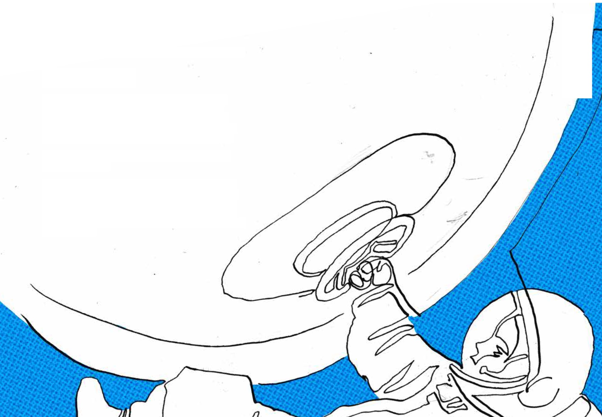
Lärande är som kärlek
Binette liknar drivkraften att lära - vid att bli förälskad. Man vill veta allt om den andra, man skissar namnet i marginalen av sina anteckningar, man fantiserar om en gemensam framtid. Nyfikenheten finns alltså redan i alla; konsten är att väcka den utan att döma hur någon lär sig.
”Skolan lär oss att det bara finns ett rätt sätt att plugga. Men ingen äger lärandet.”
Själv lyfter hon fyra sinnen – lyssna, se, göra, känna – och uppmanar människor att identifiera sitt starkaste sinne för att lära, utan att döma eller värdera vad som är bäst. Först då, när du vågar testa, när du bjuds in i samverkan och till kollektiv snällhet, sker den verkliga magin. Där, kan lärande födas och pågå.
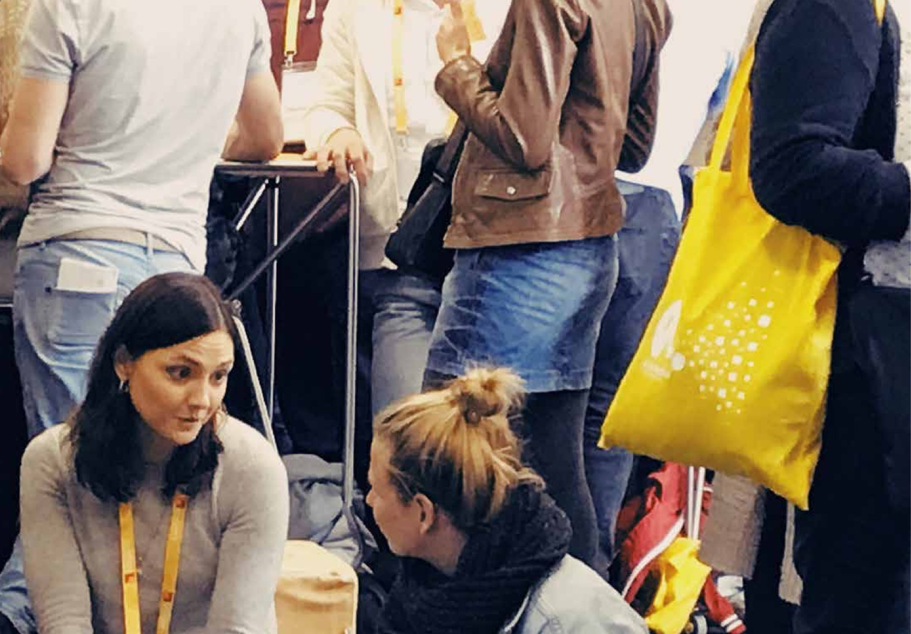
Från Tensta till Addis Abeba – tre initiativ Binette varit med och grundat
iCog Anyone Can Code (Etiopien)
’Tillsammans med lokala partners har Binette byggt ett program som redan utbildat över 35 000 barn och unga mellan åtta och arton, från grundläggande kodning till AI-projekt. ”Kan man efter 100 timmar gå från att vara den mottagande handen - till att bli den drivande?” frågade hon sig – och svaret blev ja.
Efter 100 undervisningstimmar har en fjärdedel av deltagarna startat egna techinitiativ före 25 års ålder. Det är hennes sätt att kortsluta den ”tre-generationsspiral” som annars krävs för att gå från mottagare av bistånd till att bli samhällsbyggare, och det tempot krävs menar Binette, ”vi har inte ens en generation på oss.”
Changers Tech (Sverige)
I svenska socioekonomiska utsatta områden, ser hon en annan klyfta: varje år lämnar 17 600 ungdomar grundskolan utan behörighet till gymnasiet. Detta sker samtidigt som näringslivet ropar efter minst 70 000 digitala talanger.
Changers Tech erbjuder intensiva 6- till 12-veckorskurser inom programmering, cybersäkerhet och digitalt skapande. Av alumnerna har 70 % påbörjat eftergymnasiala studier och
75 % är kvinnor – siffror som utmanar bilden av tech som en manlig bastion.
Space Academy (Stockholm)
Mitt i Stockholm nära Sergels torg, öppnade i november 2021 ungefär 7 500 m² digital kultur: världens största gamingcenter Space, som hade en lärandehub i fokus. ”Vi ville att unga skulle se sig själva som skapare, inte bara spelare.”
Hit bussades skolklasser för att koda egna spel, förstå hur gamingmotorer fungerar och – framför allt – hitta sin plats på den tekniska spelplanen. Space Academy, som var hjärtat i satsningen, finns inte kvar i dag, men dess anda lever vidare i andra initiativ som fortsätter bygga broar till teknikens värld.
Gemensamt för alla initiativen ovan är fyra bärande pelare: förebilder, nätverk, kompetens och entreprenörskap. När de står stadigt, menar Binette att bron mellan ”ingen sån som jag jobbar ändå med tech” och ett liv med en plats i framtidens arbetsmarknad - byggs.
Bryggan till forskningsprojektets fyra drivkrafter
När Binette får höra om vår modell för livslångt lärande nickar hon igenkännande: nyfikenhet, psykologisk trygghet, inre motivation och framplockning – det där är exakt de mekanismer hon själv jobbar med i praktiken. Här förklarar hon hur de visar sig i hennes vardag.
Nyfikenhet
”Kärleken till något – en idé, en kodrad, en annan människa – tänder lärandet. Därför börjar vi alltid med fascination, inte med en kursplan.”
Psykologisk trygghet
”Snällhet är ett underskattat ord. I ett rum där man får vara novis vågar fler ställa frågorna som gör alla klokare.”
Inre motivation
”Yttre betyg och projektpengar räcker bara en bit. Bron håller först när den som går över tror att framtiden faktiskt angår hen personligen.”
Recalling / framplockning
”När en kille från Tensta förklarar sin AI-baserade spelidé för en VD, lär sig båda något nytt – den ena sätter ord på sin färdighet, den andra får ett fräscht perspektiv.”
Hon lägger till en femte egen komponent:
Självledarskapets hållbarhet
”Initiativ föds och dör – många är projekttrötta. Det håller bara om människor får verktyg att fortsätta driva sitt lärande även när projektpengarna är slut.”
Fyra pelare som bär bron till tech
Fyra pelare som bär bron till tech. Välj en pelare för att läsa Binettes ord.
1. Förebilder: att få se någon som liknar dig i en roll du spanar på eller drömmer om.
2. Nätverk: att få en plus-en-inbjudan till nya rum, sammanhang och miljöer.
3. Kompetens: att konkret träna – från kod till AI.
4. Entreprenörskap: att tro på att du har rätt att skapa dig ett eget värde.
Praktiska råd från Binette till dig som vill bidra till brobyggandet
Granska din kalender för nästa vecka. Hitta ett möte där ”ingen från utsidan” brukar närvara.
”Bjud in en person som din plus en – låt dem lyssna, ställa en fråga, få ett visitkort. Den timmen kan bli deras bro in i framtiden.”
Intervju med Jens Thorsen
Kollaborativt lärande på riktigt
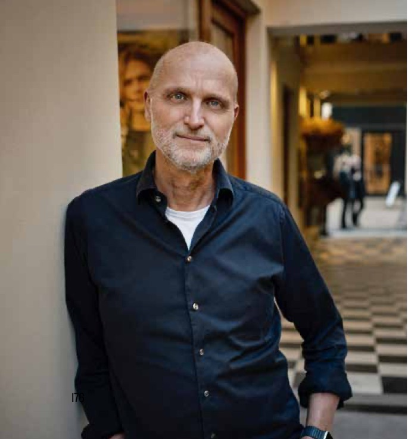
Jens Thorsen, vd och grundare, Funkis Multimedia AB, ett produktionsbolag som under många år arbetat med tillgänglig kommunikation, lärande och delaktighet i både offentlig sektor och i civilsamhället. Med bakgrund inom media, digital design och pedagogisk utveckling brinner Jens för att skapa lärande som verkligen gör skillnad – där människor växer genom att samarbeta, dela kunskap och bygga tillsammans.
Efter Petters, Johans och Binettes medskick om upplevelse, design, inkludering och vardagsrytm landar vi nu här. Hur får man faktiskt många människor att lära tillsammans, och omsätta det i handling på jobbet?
Jens Thorsen har ägnat många år åt att bygga digitala upplägg som inte stannar vid moduler, utan som tar lärandet hela vägen in i teamets gemensamma arbete. Eller som han själv säger: “det kollektiva eller kollaborativa är nyckeln.”
Jens har sina rötter i spelvärlden. På 90-talet var han en av skaparna bakom det ikoniska svenska resespelet Backpacker, där spelare reste världen runt genom frågor och uppdrag. Spelet blev en succé och byggde på en enkel men kraftfull idé – att lära sig genom att uppleva, utforska och pröva sig fram. Det perspektivet tog Jens senare med sig in i digital pedagogik.
“I spelvärlden handlar allt om att hålla spelaren engagerad, att ge lagom mycket motstånd och synlig progression. Det är exakt samma mekanismer som skapar motivation i lärande.”
Lärande som faktiskt leder till förändring
För Jens är utgångspunkten enkel, företag investerar inte i lärande för lärandets skull, utan i den förändring lärandet ska ge. Och förändring gör ibland ont. Därför blir teamets gemensamma utforskande avgörande – det är där den psykologiska tryggheten, nyfikenheten och den inre motivationen får en praktisk form.
“Vi måste skapa trygga sammanhang där gruppen vågar prata om sina känslomässiga barriärer. Först då börjar man dela erfarenheter och kunskap på riktigt.”
Lusten att lära, menar Jens, drivs sällan av en enda faktor utan av flera i kombination: förståelsen för varför man ska lära nytt, möjligheten att vara delaktig i sitt eget lärande, att inte stå ensam, och att kunna se sina framsteg längs vägen.
“Människor behöver förstå vad som blir bättre för dem – och för gruppen – för att vilja förändra.”
Från självstudie till åtagande i grupp
Formatet som Jens och Funkis driver kallar de för ” kollaborativa program”. Upplägget är alltid i flera steg och bygger på växlingen mellan individ och grupp. Först sker en group organiser preparation, där teamet bjuds in, innehållet personaliseras och en gemensam checklista säkerställer förväntningar och fokus. Därefter följer ett individuellt pre-work i form av kortare teoriavsnitt och egna reflektioner, sådant som får ta olika tid för olika personer.
När gruppen sedan möts i en group workshop leds de digitalt av en inspelad facilitator, med struktur, energi och tydliga instruktioner. Det hela mynnar nästan alltid ut i en gemensam action plan, där teamet konkretiserar vad som ska göras. Efteråt finns en individual workbook, där varje deltagare samlar sina egna åtaganden tillsammans med allt material gruppen arbetat fram. Slutligen hålls en follow-up workshop – ett tillfälle för att stämma av var teamet står, vad som faktiskt har genomförts och hur förändringen märks i vardagen. Hela den kombinationen är den verksamma substansen i lärandet.
“Du kan läsa en bok och lära dig något. Men det är först när du pratar med kollegorna om vad det betyder för ert jobb, som beteenden börjar flytta sig.”
Digital facilitering som känns mänsklig
I stället för att boka externa workshopledare paketerar de faciliteringen i själva programmet. En inspelad ledare guidar gruppen, ger instruktioner och skapar puls. Fördelen är både skalbarhet och jämlikhet. Varje grupp, oavsett plats, får samma tydliga stöd och kan genomföra när det passar dem. Det gör tiden mer avgränsad:
“Har ni bara 10–15 minuter på veckomötet? Bra. Då designar vi aktiviteten därefter – resten av arbetet görs innan eller efter.”
Spelmekanismer med låg friktion
Jens bakgrund i spelvärlden märks, men utan några blinkande nivåsystem med stjärnor eller annat. Små, väl valda signaler räcker ofta för att skapa rörelse. Som exempel: efter förarbetet möts gruppen av en enkel poänglista över vilka som gjort sin del. Effekten av när detta syntes första gången blev att till nästa gång hade alla gjort förarbetet. Ett milt socialt tryck som sporrade fler att lägga tiden som behövdes.
“Förarbeten gör gruppmöten effektiva. Alla har redan tänkt, skrivit, röstat. Det behöver inte vara avancerat. En liten, synlig puff kan räcka långt – så länge det känns relevant för jobbet.”
Mindre e-learning, mer gemensamt arbete
Jens är tydlig med vad som ofta faller mellan stolarna. Problemet kring lärande i arbetslivet är inte brist på innehåll, utan brist på urval, prioritering och samspel. Material finns det en hel uppsjö av, men utmaningen är att hjälpa människor att prioritera och väva ihop individens reflektioner med gruppens analys och beslut. Lärandet behöver ofta också ligga nära ett praktiskt genomförande, då går det lättare att märka effekten.
Här spelar solidariteten i teamet stor roll.
“Som människor är vi oftast väldigt solidariska med våra kollegor. Om vi vet att vi arbetar enligt en gemensam plan kring att lära oss nytt, och vi vet varför vi gjort den planen – då skapas motivationen.”
Kollaborativa program bärs alltså av kontexten, och som i så många andra sammanhang kring lärande, hittar vi här en gemensam avgörande faktor i ledarskapet. Om ledningen i en organisation förklarar och själva visar varför lärandet spelar roll, hur det kopplar till strategi och vart teamet ska, då ökar både deltagande och effekt. När chefer på olika nivåer visar att det här är viktigt, då händer det. Annars vinner vardagen.
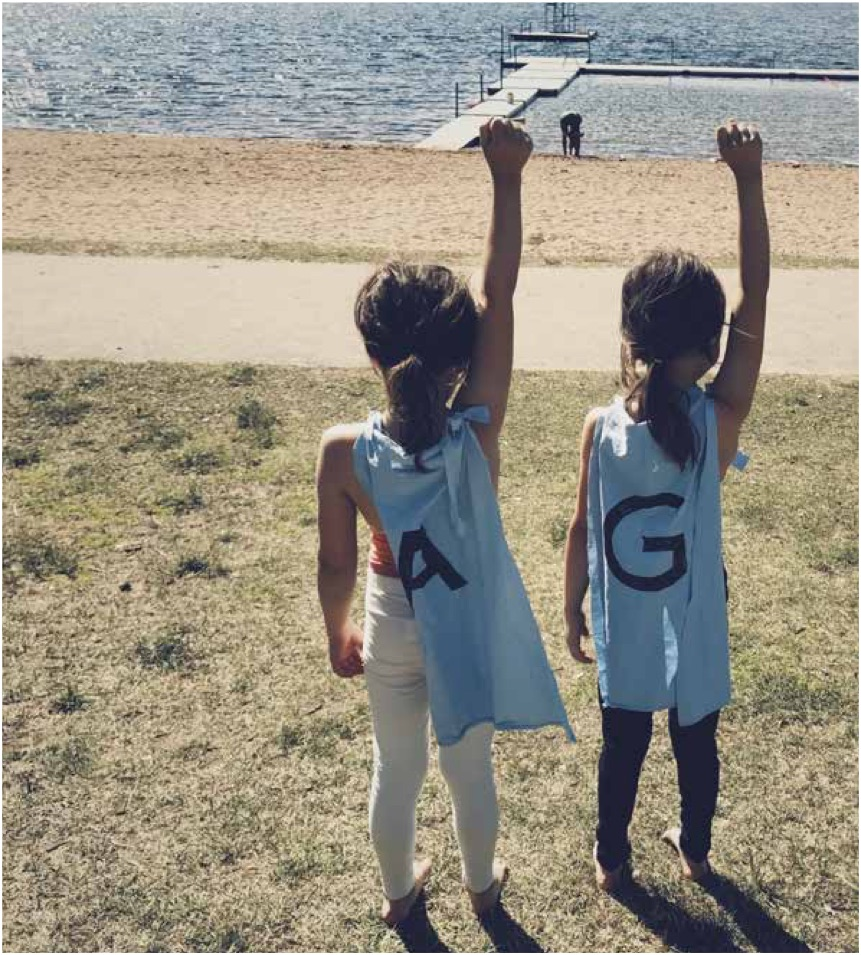
“Vi behandlar människor som vuxna: kunniga, erfarna – och ansvariga tillsammans.”
Mätning som märks i rummet
Frågan om mätning är ständigt aktuell för alla som jobbar med lärande. Men att mäta är en svår vetenskap, inte minst när det gäller just lärande. Validering handlar inte bara om quiz, prov, eller om att säkra rena kunskaper. När lärandet flyttar närmare arbetet blir resultaten synliga i hur teamet prioriterar, vad man slutar göra, vilka initiativ som faktiskt genomförs – och i hur ofta man återkommer till sitt gemensamma åtagande.
“Får vi in lärandet i teamets rytm går det också att följa upp det på ett meningsfullt sätt.”
Playguide, så bygger du kollaborativt lärande i vardagen
#####
Börja med varför, koppla varje program till strategiska mål och vad som ska bli bättre för teamet.
Dela upp olika delar, skapa ett kort, mobilvänligt förarbete och sedan en självkörande gruppsession med tydliga instruktioner.
Bygg digital facilitering, filmad facilitator som leder, sammanfattar och skapar tempo.
Ge små puffar, enkla, synliga signaler (ex. “förarbete klart”) som ökar följsamheten utan tävlingsstress.
Designa för den tid som finns, 10–15 minuter på veckomötet räcker – resten sker före/efter.
Låt chefer visa vägen, de deltar, prioriterar tid och bekräftar att lärandet är “jobb”, inte bihang.
Sammanställ gruppens input, gör individens reflektioner till gemensamma beslut och uppgifter.
Mät det som märks, följ upp åtgärder, beteenden och leveranser – inte bara genomförda moduler.
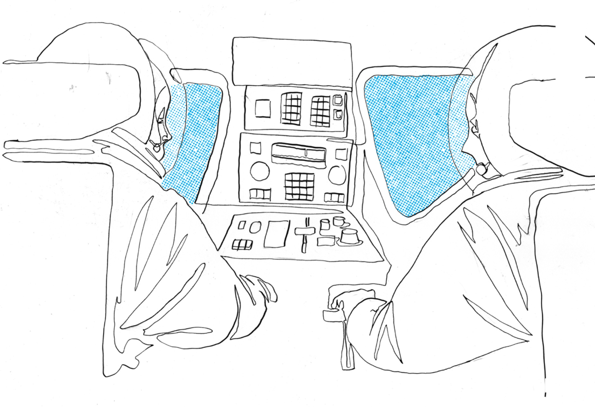
Intervju med Joakim Jansson
Demokratisera transformation
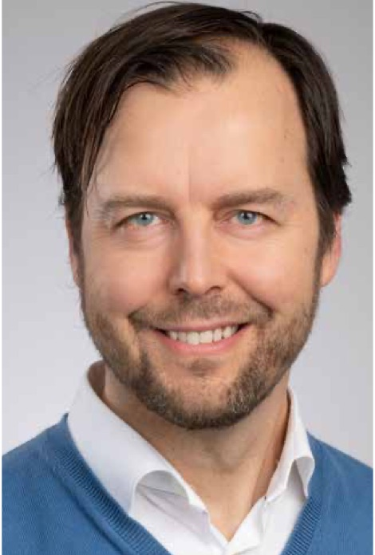
Joakim Jansson är grundare av DigJourney och en av Sveriges mest erfarna röster inom digital och systemisk transformation. Som transformationsledare och föreläsare har han under många år hjälpt företag, myndigheter och organisationer att navigera förändring – inte bara genom nya strategier och verktyg, utan genom att förändra sättet vi tänker, leder och samarbetar på. Joakims arbete utgår från övertygelsen att verklig transformation börjar inifrån, och att lärande och delaktighet är nyckeln till att skapa hållbar förändring – på riktigt.
– med lärande som huvudprocess
När Joakim Jansson började arbeta med digitalisering i mediebranschen var det inte bara ett teknikskifte han såg, utan början på en mycket större samhällsförändring. Det som kallades digital omställning blev för honom en port in i frågor om hur människor, organisationer och system faktiskt förändras – och vad som krävs för att vi ska orka och våga följa med. Redan 2012 började han formulera det som senare blev boken Att leda digital transformation (2016) och därefter bolaget DigJourney, med en tydlig idé: att demokratisera transformation.
För Joakim handlar det om att ge människor tillgång till språk, verktyg och förmågor som gör att de kan delta i och leda förändring och inte bara bli föremål för densamma. För när omställningen skär igenom alla delar av samhället blir lärande inte en separat aktivitet, utan en samhällsbärande process.
När hela världen förändras
Han beskriver vår tid som flera megatrender som löper samman; digitalisering, klimat, migration, hållbarhet – där utvecklingen går snabbare än våra institutioner hinner anpassa sig. Det skapar oro, men också nyfikenhet. Och det är i den spänningen vi måste lära oss att leva - och lära. ”Att vara rädd och nyfiken samtidigt”, som Joakim uttrycker det. Om oron får ta över stannar lärandet. Därför blir psykologisk trygghet och meningsfullhet avgörande, både i organisationer och i samhället i stort.
För DigJourney har svaret därför varit att göra lärande till själva motorn i transformationen. Snarare än att lägga månader på att planera fram perfekta förändringsplaner handlar det om att börja röra sig i ungefär rätt riktning, och låta lärandet förfina kursen längs vägen. Planer behövs, men de får liv först när människor förstår, kan och vill ta sig an förändringen. Så istället för fasta planer, får man jobba med löpande och framväxande planering.
En process i flera steg
Joakim beskriver hur de arbetar med parallella processer där lärandet löper genom allt: dessa handlar om att förstå nuläget, planera, agera och engagera – men aldrig i tur och ordning, utan samtidigt. I praktiken betyder det att alla, från ledning till team, får samma språkliga och metodiska grund. Det skapar en gemensam karta över en annars komplex terräng.
Det handlar också om trygghet i struktur. När allt annat rör sig behöver något stå fast – ett ramverk, ett språk, en gemensam process. En sådan igenkänning gör det lättare att våga experimentera och ta risker. Trygghet och innovation är två sidor av samma mynt.
Samtidigt skiljer han mellan individens kunskap och organisationens förmåga att använda den. Lärande blir meningslöst om arbetsmiljön inte tillåter att kunskapen används. Därför måste både mänskliga processer och system designas om samtidigt – annars rinner kraften ur förändringen.
Det finns många sätt att lära oss saker, kurser är en av dessa, och de kan ibland vara nödvändiga för att kunna ta större kliv i förståelse och färdigheter. Det viktigaste för att få utbildningar att ge effekt sker inte under själva kursen, utan före och efter. Före kursen - när syftet förklaras och ledningen visar att det är viktigt. Efter kursen - när det krävs att man bekräftar betydelsen av det nya lärandet och ger plats för det - för att beteendeförändringarna ska kunna ske.
Så kan också inre motivation växa fram. För Joakim är detta kopplat till hållbarhet – övertygelsen att transformation kan bidra till ett samhälle där tekniken förstärker det mänskliga, inte ersätter det.
“Det enda vi kan vara säkra på, är att i en värld som hela tiden förändras snabbare och snabbare, så är vår förmåga att lära oss saker och göra om det till någon form av handling, en effekt, ett värdeskapande inom organisationer - det enda som egentligen någonstans kan ta oss i riktning mot att framtidssäkra oss själva.”
Det är ett perspektiv som sträcker sig långt bortom organisationsutveckling. Det handlar om vilket sorts samhälle vi designar när vi ser lärande som infrastruktur – inte bara för individers kompetens, utan även för demokratins motståndskraft.
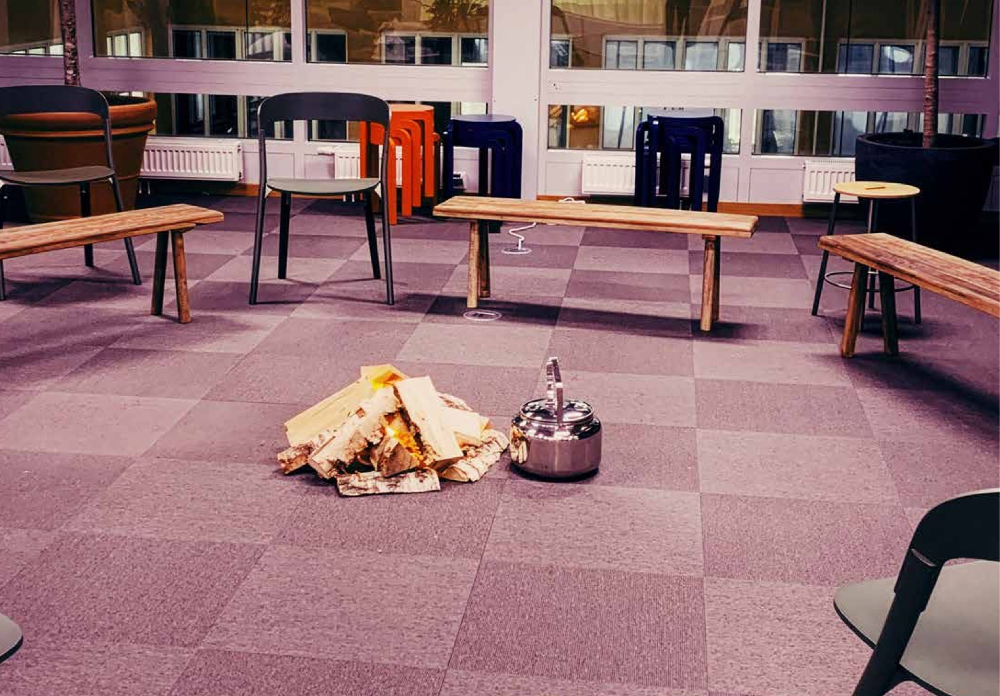
Playguide - lärande i transformation
Att designa för lärande i en tid av ständig förändring handlar alltså inte om fler kurser, utan om att skapa rörelse, riktning och trygghet samtidigt. Här är några mönster från arbetet i DigJourney:
Se lärande som en motor, inte en modul
Se lärandet som en huvudprocess i verksamheten. Det ska driva innovation, utveckling och strategisk förflyttning – inte ligga vid sidan av.
Fyra parallella processer
Förändring blir hållbar när vi arbetar med lärande, planering, engagemang och handling samtidigt. De behöver varandra, och bör inte isoleras i sekvenser.
Forma ett gemensamt språk, en gemensam karta
Alla nivåer i organisationen behöver prata om förändring med samma begrepp och förståelse. Utan ett delat språk stannar lärandet i stuprör.
Skapa en trygg struktur för osäkra tider
När allt annat skiftar skapar igenkänning och tydliga ramar psykologisk trygghet. Struktur frigör mod, och mod frigör lärande.
Före och efter betyder mest
Effekten av en kurs eller ett lärmoment avgörs till stor del av vad som sker innan och efter. Förväntan, uppföljning och tillämpning avgör om lärandet fäster.
Bygg miljöer som använder kunskap
Kunskap utan kontext skapar frustration. Designa arbetsmiljöer där ny kunskap kan omsättas i handling – det är där kompetens blir verklig.
Se hållbarhet som en inre drivkraft
När lärande kopplas till något större än individen – framtid, hållbarhet eller kanske samhällsnytta – stärks den inre motivationen och riktningen blir tydligare.